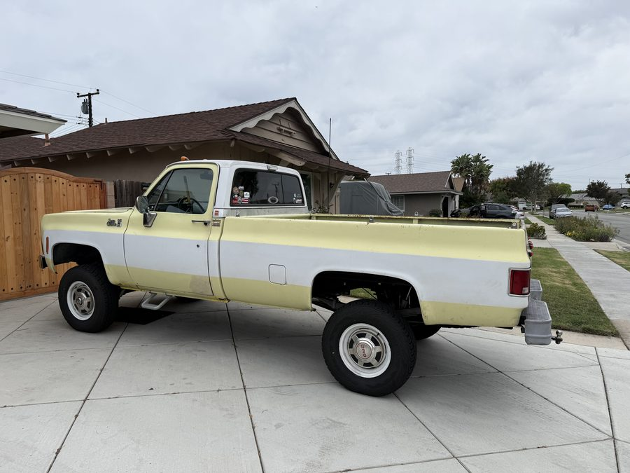
Meet Banana
Some trucks are meant to sit in a showroom. Others are meant to tell stories. Meet Banana, my 1979 GMC Sierra Grande, a pale-yellow-and-cream squarebody that’s been turning heads and collecting memories for decades.
She’s not perfect, and that’s part of the charm. Every repair, modification, and mile adds another chapter to her story. Whether it’s a quiet 5 a.m. drive, a weekend project, or an unexpected breakdown, life with Banana is never boring.
I’m an engineer, a family man, and a squarebody enthusiast who enjoys the adventure as much as the destination. Banana’s Garage is my little corner of the internet dedicated to keeping this classic GMC alive and sharing everything I learn along the way.
Old trucks. New memories. Endless adventures.
Photos
Of the truck
Scroll left!
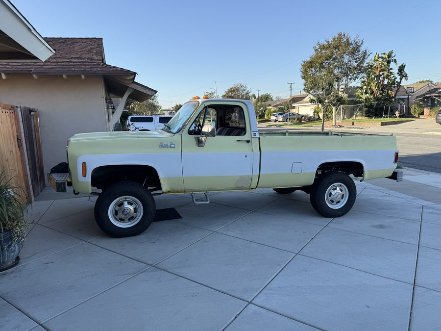
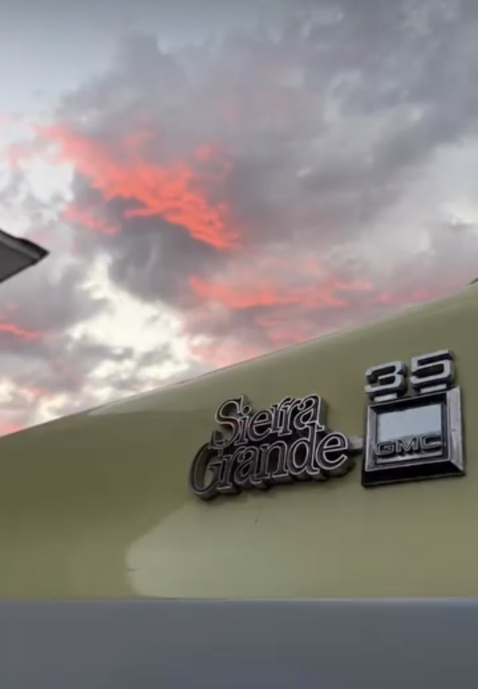
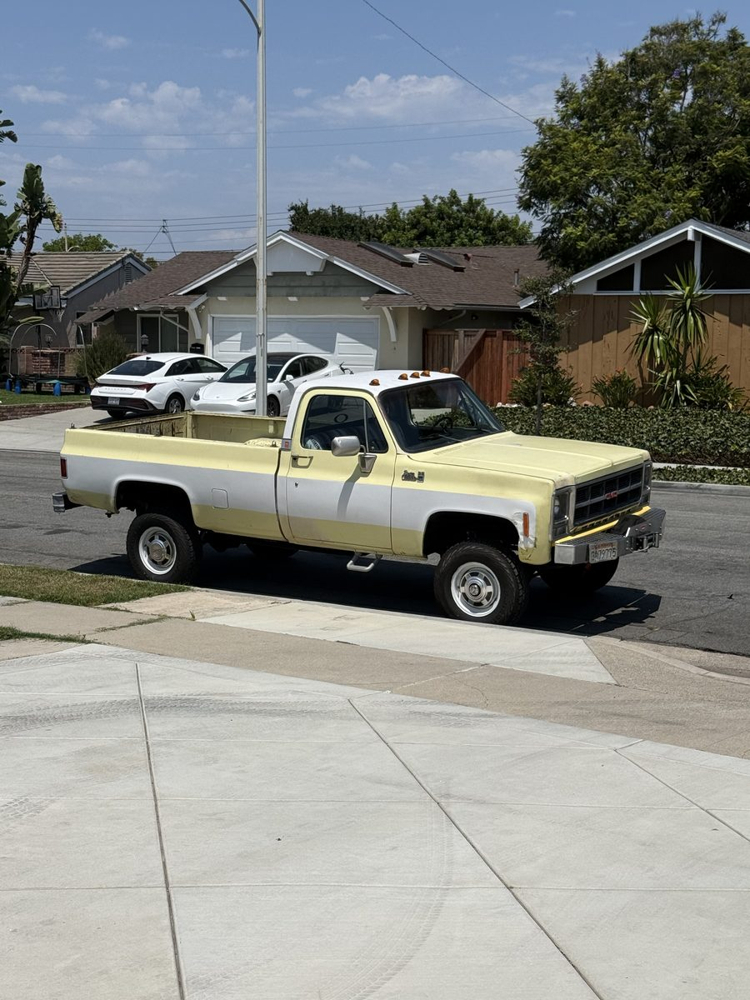


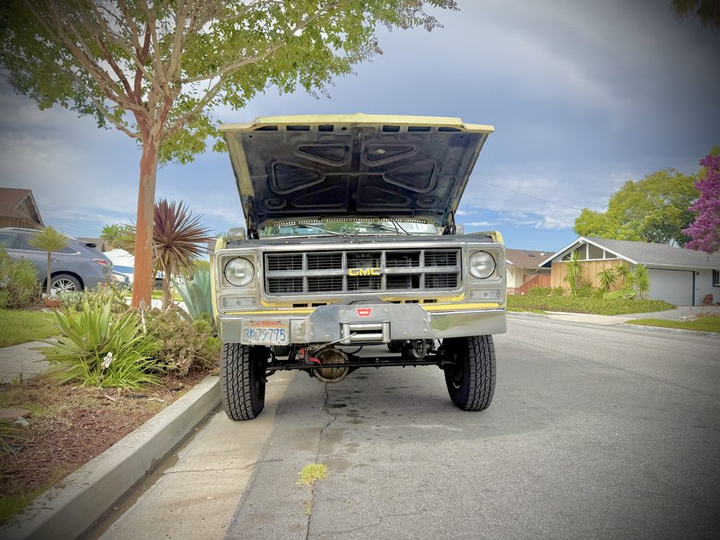
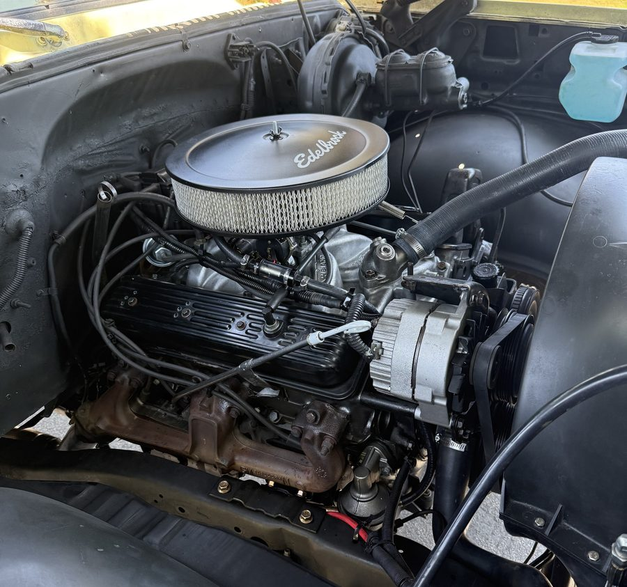
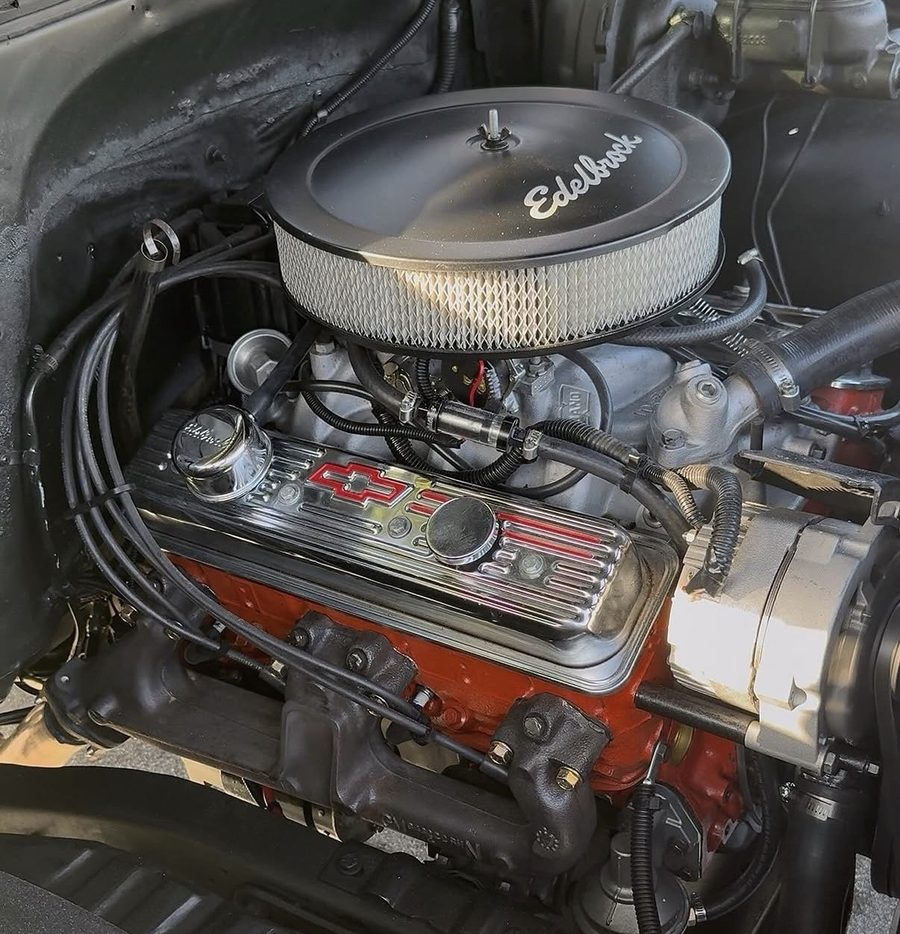
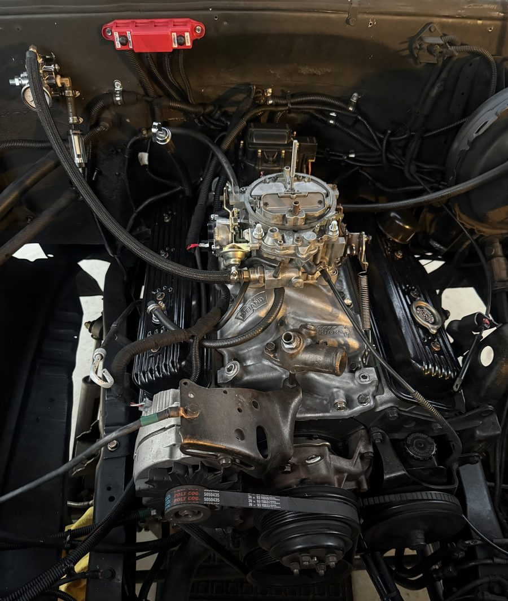
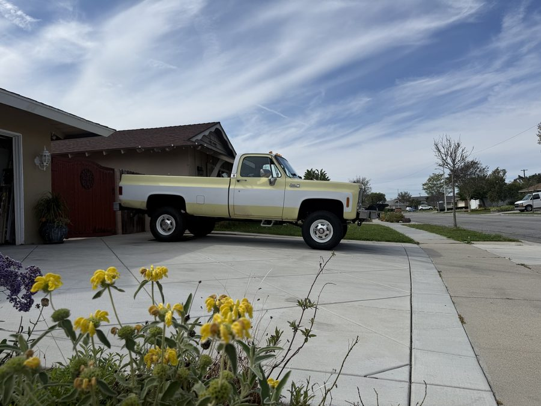
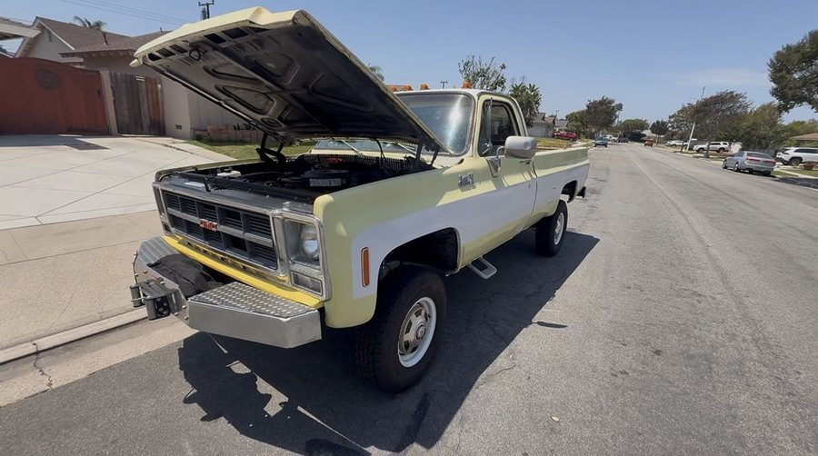
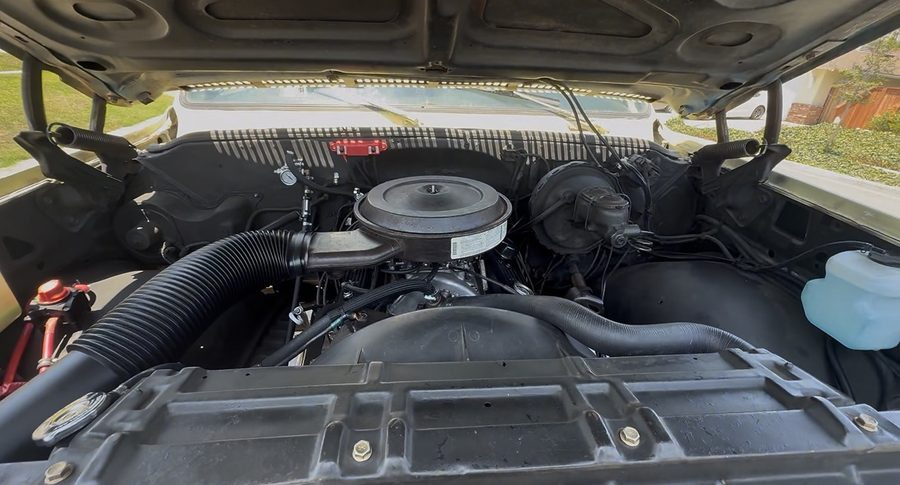
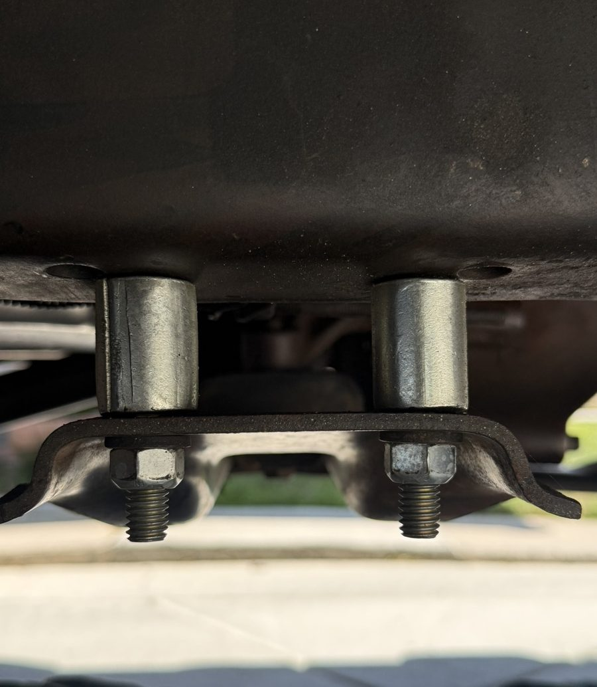
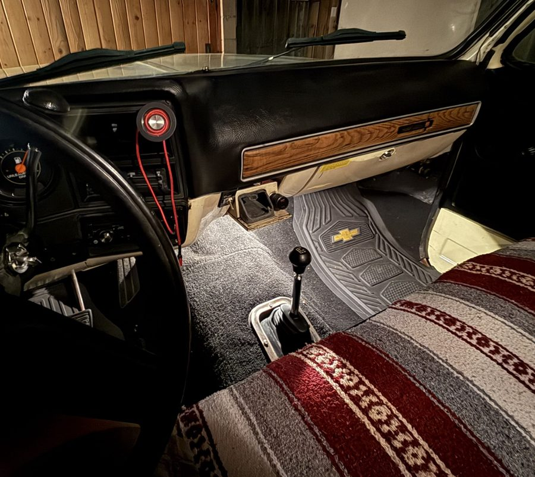
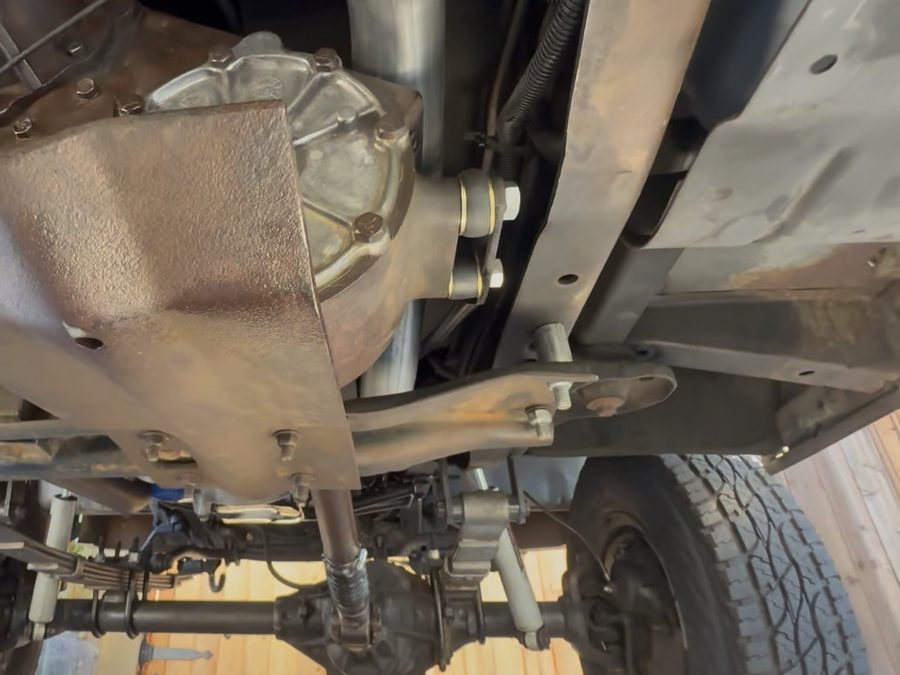